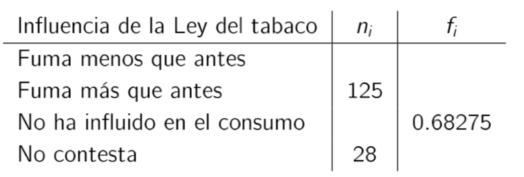
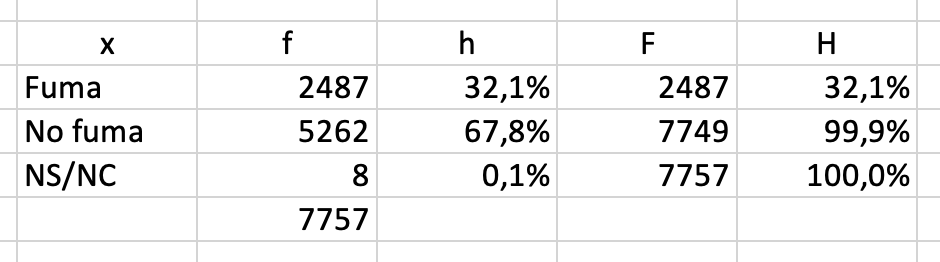
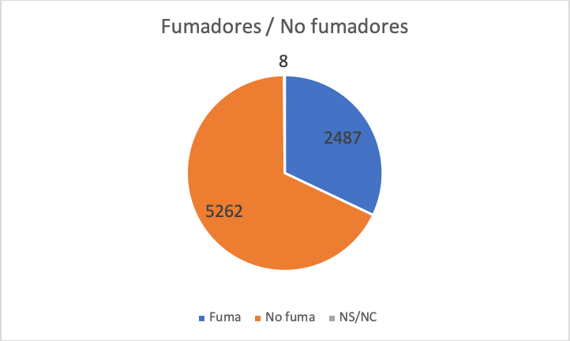
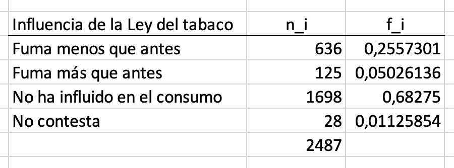
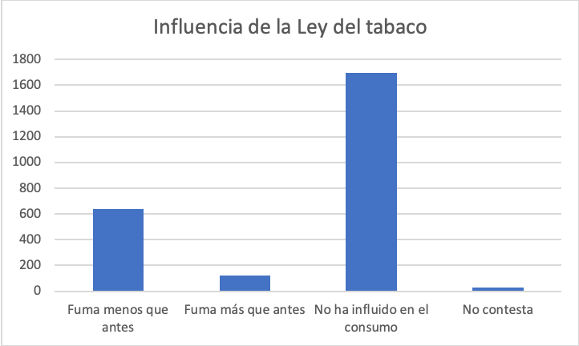
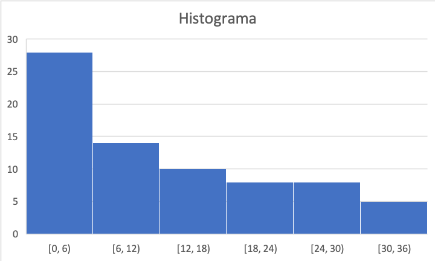
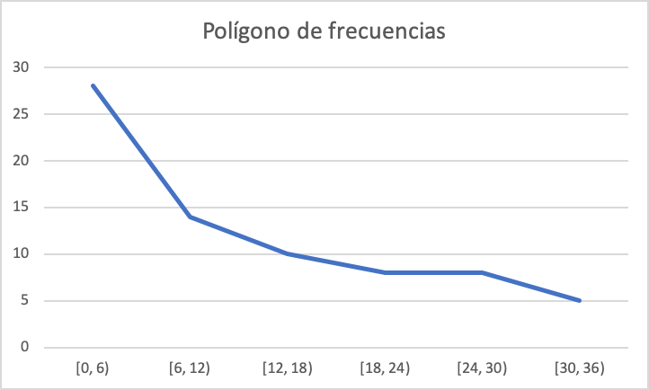
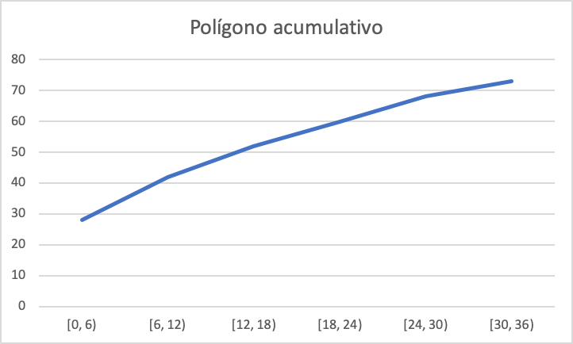
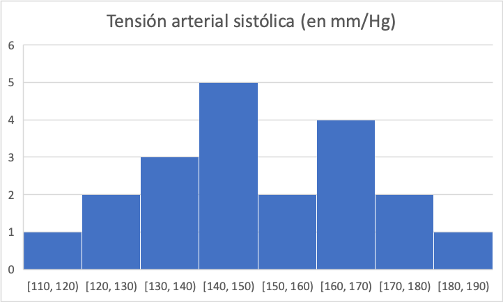
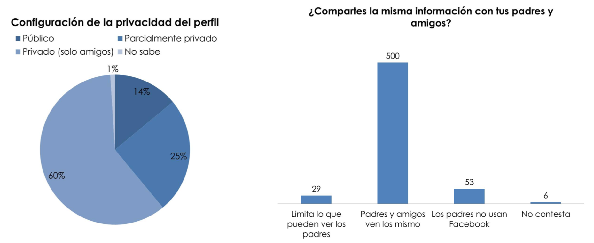

Capítulo 2 Planteamiento de una investigación: Anatomía y Fisiología de la investigación
En este capítulo se resolverán problemas relativos a:
- Diseño de una investigación
- Métodos de muestreo
- Métodos de recolección de datos
- Variables y Escalas de Medida
- Errores en la Investigación
2.1 Pregunta test
La proporción de individuos de una población que tiene una enfermedad en un momento dado de tiempo se denomina:
- Incidencia acumulada
- Densidad de incidencia
- Fracción atribuible
- Prevalencia
- Odds ratio
2.2 Pregunta test
Es una Variable Cualitativa Ordinal:
- Sexo (M, F).
- Bebe (no, poco, mucho).
- Nº de muelas cariadas.
- Temperatura corporal.
- Raza (blanca, negra, amarilla).
2.3 Pregunta test
¿Cuál es el mejor tipo de estudio epidemiológico para estimar la prevalencia de una enfermedad crónica en una comunidad determinada?
- Estudio ecológico
- Ensayo clínico aleatorio
- Estudio transversal de la población
- Estudio de casos y controles
- Estudio de cohortes
2.4 Problema
- El Ministerio de Sanidad, Servicios Sociales e Igualdad ha publicado recientemente el Barómetro Sanitario nacional, correspondiente a 2011.
a) Según los resultados del estudio, de los 7757 encuestados, 2487 afirman ser fumadores en la actualidad, 5262 afirman ser no fumadores y el resto no contesta. Construye la tabla de frecuencias correspondiente y realiza una gráfica representativa de la distribución de la muestra según el hábito de fumar.
b) A aquellos que habían declarado ser fumadores se les preguntó a continuación como habían influido en su consumo las medidas de la nueva Ley del tabaco. A continuación se muestra una tabla incompleta que resume las respuestas. Completa la tabla y realiza una gráfica representativa.

2.4.1 Solución
a) Construimos la tabla de frecuencias con Excel© según esta Práctica del Curso de Bioestadística:

Con los datos de la tabla, hacemos un diagrama de sectores según esta Práctica del Curso de Bioestadística

b) En este caso, se pregunta a los que habían declarado ser fumadores por lo que \(N = 2487\). Como la frecuencia relativa de la opción “No ha influido en el consumo” es \(0,68275\), la refuencia absoluta es \(0,68275 \cdot 2487 = 1697,99925 \approx 1698\) (no puede haber decimales). No tenemos más que calcular la frecuencia absoluta de la opción “Fuma menos que antes,” \(2487 - 28 - 1698 - 125 = 636\) y completar la tabla con las frecuencias relativas:

Finalmente, obtenemos un diagrama de barras de los datos:

2.5 Pregunta test
Se realiza una auditoría de historias clínicas tomando una primera historia al azar y después sucesivamente, la que ocupa la vigésima posición detrás de la anterior. Este procedimiento de muestreo se denomina:
- Por conglomerados.
- Sistemático.
- Correlativo.
- Consecutivo.
- Equidistante.
2.6 Pregunta test
En una muestra de pacientes, el número de varones dividido entre el total de pacientes es:
- Una frecuencia relativa.
- Una frecuencia absoluta.
- Una variable cuantitativa.
- Una variable cualitativa.
- Un valor de la variable.
2.7 Pregunta test
Señale cuál de las siguientes afirmaciones es falsa:
- La aparición o no de bacterias en un cultivo es una variable dicotómica
- La estatura de un individuo es una variable cuantitativa discreta.
- El lugar que ocupa una persona entre sus hermanos (de menor a mayor edad) es una variable ordinal.
- El estado civil es una variable cualitativa.
- La glucemia es continua.
2.8 Problema
En base a la siguiente distribución de frecuencias relativas acumuladas de la variable \(X\) = “Número de contratos conseguidos en el mes de enero” obtenida de la observación de la actividad de 50 teleoperadores de una compañía de telefonía móvil, indique el número mínimo de contratos que tiene que haber conseguido un teleoperador para estar entre los 5 que han destacado más:
| \(X_i\) | 58 | 60 | 62 | 65 | 68 | 70 | 71 |
|---|---|---|---|---|---|---|---|
| \(H_i\) | 0.06 | 0.2 | 0.4 | 0.64 | 0.8 | 0.92 | 1 |
2.8.1 Solución
Al haber 50 teleoperadores, si tiene que estar entre los 5 que han destacado mas, debe dejar a 45 por detrás. Como \(\frac{45}{50}=0.9\), deberá superar al 90 %, es decir, estar por encima del 0.9 en la frecuencia relativa acumulada.
En la tabla vemos que para el valor 70 se alcanza la frecuencia relativa acumulada de 0.92 por lo que para estar entre los 5 que más han destacado, deberá haber firmado, al menos, 70 contratos.
2.9 Pregunta test
¿A qué fase del proceso de investigación pertenece la recogida, análisis e interpretación de los resultados?
- Fase conceptual.
- Fase Metodológica.
- Fase Empírica.
- Fase de análisis e interpretación de los datos.
2.10 Pregunta test
La incidencia de una enfermedad es:
- La relación entre enfermos y fallecidos
- La prevalencia multiplicada por la morbilidad
- Lo mismo que la prevalencia
- El nº de casos nuevos de esa enfermedad
- Ninguna de las anteriores
2.11 Pregunta test
En el caso de una variable ordinal, el número n de datos válidos es:
- La suma de las frecuencias absolutas.
- La frecuencia absoluta acumulada de la categoría más frecuente.
- La suma de las frecuencias relativas.
- La frecuencia relativa acumulada en la última categoría.
- La (a) y la (d) son ciertas.
2.12 Pregunta test
El nº de casos nuevos de una enfermedad que se desarrolla en una población en un periodo de tiempo determinado se conoce como:
- Densidad de incidencia
- Incidencia acumulada
- Prevalencia
- Fracción atribuible
- Riesgo relativo
2.13 Pregunta test
Se realiza un estudio con objeto de determinar el tiempo de supervivencia en pacientes con cáncer. Para ello de los dos hospitales existentes en una ciudad, se selecciona aleatoriamente uno de ellos, y se elige una muestra aleatoria de pacientes, atendiendo al tipo de cáncer: El muestreo realizado es:
- Sistemático.
- Aleatorio.
- Por conglomerados.
- Estratificado.
- Por conglomerados y estratificado.
2.14 Pregunta test
En un estudio sobre problemas cervicales preguntamos a los pacientes acerca del tipo de almohada que usan. Las respuestas deberían ser consideradas como una variable:
- Cualitativa nominal
- Numérica
- Discreta
- Continua.
- Ordinal
2.15 Pregunta test
Al inicio de un estudio de cohortes ¿cómo está la población a estudiar?
- Todos los efectos del proceso que se estudia
- Todos sanos
- La cohorte expuesta sana y la no expuesta enferma
- La cohorte expuesta enferma y la no expuesta sana
- Ninguna de las anteriores
2.16 Problema
De la distribución de la variable \(X\) = ‘Peso (en Kg)’ de un colectivo de adolescentes agrupada en 4 intervalos con límites superiores 60, 65, 70 y 75 se sabe que:
- la mitad del colectivo pesa entre 65 y 70 kg
- una cuarta parte pesa como máximo 65 kg
- 9 adolescentes tiene un peso máximo de 60 kg
- 18 pesan entre 70 y 75 kg.
Calcula
a) El número n de adolescentes entrevistados
b) El porcentaje de adolescentes que pesan entre 55 y 60 kg
c) El peso mínimo de la mitad de adolescentes con mayor peso
d) Cuántos alumnos pesan como máximo, 65 kg
2.16.1 Solución
Vemos que tenemos mucha información que conviene organizar en forma de tabla. Empezamos escribiendo una tabla con los datos que tenemos:
| Intervalo | \(f_i\) | \(h_i\) | \(F_i\) | \(H_i\) |
|---|---|---|---|---|
| \([55,60)\) | 9 | 9 | ||
| \([60,65)\) | 0.25 | |||
| \([65,70)\) | 0.50 | |||
| \([70,75)\) | 18 | 1 |
A partir de estos datos, vamos a completar el resto.
Como el 25 % pesan menos de 65 y el 50 % entre 65 y 70, entonces el 75 % pesarán menos de 70 kg y el 25 % pesarán más de 70 hg.
| Intervalo | \(f_i\) | \(h_i\) | \(F_i\) | \(H_i\) |
|---|---|---|---|---|
| \([55,60)\) | 9 | 9 | ||
| \([60,65)\) | 0.25 | |||
| \([65,70)\) | 0.50 | 0.75 | ||
| \([70,75)\) | 18 | 0.25 | 1 |
Así, el 25 % (la cuarta parte) del número n de adolescentes entrevistados es 18 por lo que \(n = 18 \cdot 4 = 72\). El 50 % de 72 es 36 y, como hay 9 adolescentes entre 55 y 60 kg y como \(72 - 9 - 36 - 18 = 9\), tendremos
| Intervalo | \(f_i\) | \(h_i\) | \(F_i\) | \(H_i\) |
|---|---|---|---|---|
| \([55,60)\) | 9 | 0.125 | 9 | 0.125 |
| \([60,65)\) | 9 | 0.125 | 18 | 0.25 |
| \([65,70)\) | 36 | 0.50 | 54 | 0.75 |
| \([70,75)\) | 18 | 0.25 | 72 | 1 |
Y a la vista de la tabla, podemos responder a las preguntas:
a) Se entrevistaron a 72 adolescentes
b) El 25 % de adolescentes pesa entre 55 y 60 kg
c) El 50 % de los adolescentes con mayor peso están en los intervalos \([65,70)\) y \([70,75)\) y, como no podemos saber exactamente cuál es el peso menor de ese 50 %, el peso mínimo de la mitad de adolescentes con mayor peso es de, al menos, 65 kg.
d) 18 alumnos pesan como máximo 65 kg
2.17 Pregunta test
¿Cuál de las siguientes características pertenece al paradigma naturalista?
- Pretende buscar la objetividad.
- El investigador interactúa con los sujetos investigados y los resultados se crean de esa interacción.
- Utilización de procesos deductivos.
- Importancia en el análisis estadístico.
2.18 Pregunta test
En un estudio sobre la enfermedad coronaria en la población española, se selecciona una muestra de individuos hipertensos y un grupo de control de no hipertensos. Se les sigue durante 5 años y se compara la incidencia de la enfermedad de ambos grupos ¿A qué tipo de diseño corresponde el estudio?
- Estudio de cohortes
- Estudio de casos y controles
- Estudio transversal
- Ensayo clínico
- Estudio ecológico
2.19 Pregunta test
Se desea estimar confidencialmente el número medio de veces que asiste a un servicio de salud los individuos de una población. Para ello se toman muestras aleatorias entre los individuos que asisten regularmente a los mismos. Esta técnica de muestreo es:
- Un muestreo aleatorio simple.
- Un muestreo aleatorio estratificado.
- Un muestreo aleatorio por conglomerados.
- Incorrecta.
- Ninguna de las anteriores.
2.20 Pregunta test
El estudio estadístico en el que se pretenden extrapolar los datos de una muestra a la población se denomina:
- Estadística descriptiva.
- Estadística inferencial.
- Medidas de tendencia central.
- Medidas de posición.
2.21 Problema
Con el objetivo de programar las actividades en un consultorio se obtiene información del número de consultas realizadas el año anterior:
| Mujeres | Hombres | |
|---|---|---|
| Intervalo | n | n |
| 1 - 3 | 18 | 22 |
| 4 - 6 | 39 | 31 |
| 7 - 9 | 53 | 46 |
| 8 - 10 | 45 | 40 |
| 11 - 13 | 53 | 35 |
| 14 - 16 | 39 | 29 |
| 17 - 20 | 18 | 26 |
| Total | 265 | 229 |
a) Indique el (o los) nombre(s) de las(s) variables(s) de la tabla e identifique sus categorías.
b) Indique el tipo de escala de las(s) variables (s) de la tabla.
c) ¿Qué porcentaje de pacientes realiza, al menos, 8 consultas?
2.21.1 Solución
a) La variable estudiada es número de consultas realizadas el año anterior con 2 categorías, Mujeres y Hombres.
b) Es una variable cualitativa discreta de escala ordinal con resultados agrupados en intervalos.
c) Para calcular el porcentaje pedido, vemos que:
Mujeres con, al menos 8 consultas: \(45 + 53 + 39 + 18 = 155\)
Hombres con, al menos 8 consultas: \(40 + 35 + 29 + 26 = 130\)
Pacientes con, al menos 8 consultas: \(155 + 130 = 285\)
Total de pacientes: \(265 + 229 = 494\)
Como \(\dfrac{285}{494} \approx 0.577\), entonces el 57.7 % de pacientes realiza, al menos, 8 consultas.
2.22 Pregunta test
Elija la afirmación correcta sobre variables observadas en individuos:
- Poseer vivienda propia es una variable numérica.
- Poseer animales de compañía es una variable cualitativa.
- La nacionalidad es una variable ordinal.
- El tipo de almohada que usa es variable ordinal.
- La longitud de la cama donde duerme es variable discreta.
2.23 Pregunta test
La estadística en Ciencias de la Salud se utiliza para obtener información sobre situaciones de caracter:
- Determinista.
- Sistemático.
- Exhaustivo.
- Aleatorio.
- Excluyente.
2.24 Pregunta test
Elija la afirmación que pueda considerarse admisible al leer un estudio estadístico:
- Se estudió a una muestra en vez de a la población, para mayor precisión.
- Se estudió a la población para obtener información sobre la muestra.
- Se estudió a una muestra representativa de la población.
- Se estudiaron todas las variables de la población.
- Se observó a un individuo de cada variable.
2.25 Problema
En un estudio sobre supervivencia tras un tratamiento con quimioterapia para cierto tipo de cáncer ha sido registrado el tiempo transcurrido desde el inicio del tratamiento hasta el fallecimiento de los individuos. Los tiempos registrados se resumen en la tabla adjunta, agrupados por intervalos de 6 meses de amplitud:

a) Calcule las frecuencias relativas y porcentajes de los distintos intervalos.
b) Calcule los puntos medios de los intervalos.
c) Calcule las frecuencias absolutas y porcentajes acumulados
d) Construya el histograma, polígono de frecuencias y polígono acumulativo
2.25.1 Solución
a), b) y c)
- f: frecuencias absolutas
- h: frecuencias relativas (porcentajes)
- F: frecuencias absolutas acumuladas
- H: frecuencias relativas acumuladas (en porcentaje)

Tabla construida siguiendo esta Práctica con Excel© del Curso de Bioestadística
d)

Gráfico construido siguiendo esta Práctica con Excel© del Curso de Bioestadística


Gráficos construidos siguiendo esta Práctica con Excel© del Curso de Bioestadística
2.26 Pregunta test
Elija la afirmación correcta:
- Los valores de cualquier variable deben ser agrupados en intervalos.
- Las variables deben ofrecer valores que no se repitan en los diferentes individuos.
- Las modalidades de una variable deben poder ser observadas en todos los individuos.
- Los individuos pueden poseer diferentes modalidades de la misma variable.
- Todo lo anterior es falso.
2.27 Pregunta test
Elija la opción correcta.
- Un parámetro es algo calculado sobre cada individuo.
- Un parámetro es calculado sobre la muestra.
- Una variable se calcula sobre los parámetros de una población.
- Un estadístico se calcula sobre la población.
- Nada de lo anterior es correcto.
2.28 Pregunta test
Disponemos de la distribución de edades de los individuos de una población. El número de ellos que no es mayor de edad, es:
- Una frecuencia relativa.
- Una frecuencia absoluta.
- Una frecuencia acumulada.
- Una variable numérica.
- Una variable cualitativa.
2.29 Pregunta test
¿Cuál de las siguientes no es una característica de los estudios de cohortes?
- Son estudios observacionales
- El criterio de selección de los sujetos es la presencia o no de cnfermedad
- Son estudios longitudinales
- Pueden ser prospectivos o retrospectivos
- Tienen direccionalidad hacia delante
2.30 Pregunta test
Para un estudio epidemiológico sobre dolencias de suelo pélvico en mujeres en la provincia de Albacete, se decide seguir la siguiente estrategia de muestreo: Se elige aleatoriamente 10 poblaciones de la provincia, y en cada una de ellas se elige aleatoriamente 10 calles. Allí se elige aleatoriamente 5 números de la calle y se estudia a las mujeres que aceptan participar. El muestreo es:
- Aleatorio simple
- Por conglomerados.
- Estratificado.
- Sistemático.
- Estratificado y por conglomerados.
2.31 Problema
Los datos corresponden a las medidas de tensión arterial sistólica (en mm/Hg) registradas sobre 20 individuos fumadores de más de una cajetilla de cigarrillos diaria:
145, 185, 120, 160, 165, 160, 175, 145, 145, 175, 130, 130, 120, 110, 145, 150, 155, 160, 145, 135
a) Construya la tabla de distribución de frecuencias para los datos originales.
b) Construya la tabla de distribución de frecuencias por intervalos de amplitud 10 mm/Hg.
c) Grafique la distribución de la variable.
#Solución
a)
Contando con papel y boli:
| Tensión | 110 | 120 | 130 | 135 | 145 | 150 | 155 | 160 | 165 | 175 | 185 |
|---|---|---|---|---|---|---|---|---|---|---|---|
| f | 1 | 2 | 2 | 1 | 5 | 1 | 1 | 3 | 1 | 2 | 1 |
b)
Se pide ahora considerar intervalos de amplitud 10 mm/Hg. Como el mínimo es 110 y el máximo 185, establecemos 8 intervalos:

Tabla construida siguiendo esta Práctica con Excel© del Curso de Bioestadística
c) Al tener los datos en intervalos, utilizamos un histograma:

Gráfico construido siguiendo esta Práctica con Excel© del Curso de Bioestadística
2.32 Pregunta test
Conocemos la distribución de estudiantes entre las distintas facultades del campus Viriato. El número de estudiantes de Enfermería es:
- Una frecuencia relativa.
- Una frecuencia absoluta.
- Una frecuencia acumulada.
- Un porcentaje.
- Una variable cualitativa.
2.33 Pregunta test
Se llama parámetro a:
- Una función de valor numérico definida sobre alguna característica observable en los individuos de una población.
- Una función definida sobre los valores numéricos de una muestra.
- Cualquier variable observable de una población
- Las variables numéricas de la muestra
- Cualquier función sobre las variables observadas
2.34 Pregunta test
Respecto a los estudios de casos y controles es cierto que:
- Se analizan comparando la incidencia de una enfermedad o proceso en el grupo de casos respecto al grupo de controles
- Pueden escogerse varios controles para cada caso
- Una de las medidas de asociación que puede calcularse directamente en su análisis es el riesgo relativo
- Se denominan también estudios de prevalencia
- Es preferible seleccionar casos prevalentes en vez de casos incidentes de la enfermedad o proceso en estudio
2.35 Pregunta test
Si se realiza un estudio para evaluar el rendimiento académico de los estudiantes en una universidad y se selecciona una muestra de estudiantes de manera que cada estudiante tenga la misma probabilidad de ser elegido, ¿qué tipo de muestreo se está utilizando?
- Muestreo por conglomerados o por grupos
- Muestreo sistemático
- Muestreo aleatorio simple
- Muestreo no probabilístico
- Muestreo estratificado
2.36 Pregunta test
El grado de satisfacción (poco/regular/mucho) con la política española la trataría como:
- una variable cualitativa nominal.
- una variable cuantitativa discreta.
- una variable cualitativa ordinal.
- una variable numérica continua.
- ninguna de las anteriores es correcta.
2.37 Pregunta test
Con respecto a la modalidades de una variable cualquiera:
- Pueden siempre agruparse en clases.
- Deben formar un sistema exhaustivo.
- No pueden agruparse en intervalos.
- No tienen porqué formar un sistema excluyente.
- Solo dos son correctas.
2.38 Pregunta test
¿Cuál es el estudio de elección para evaluar la eficacia de un nuevo tratamiento?
- Estudio de casos y controles
- Ensayo clínico aleatorio
- Estudio transversal
- Estudio de morbilidad
- Estudio de cohortes
2.39 Pregunta test
Cuando hablamos de número de cumpleaños que ha tenido una persona estamos ante:
- Una variable cualitativa ordinal.
- Una variable cualitativa nominal.
- Una variable cuantitativa discreta.
- Una variable cuantitativa continua.
- El número de cumpleaños no es una variable.
2.40 Pregunta test
Las pruebas de cribado son una actividad de:
- Prevención primaria
- Prevención secundaria
- Prevención terciaria
- Promoción de la salud
- Prevención primaria y promoción de la salud
2.41 Pregunta test
Las frecuencias acumuladas tienen sentido para:
- Variables ordinales
- Variables numéricas
- Variables nominales
- Todas son correctas.
- Las opciones a) y b) son correctas.
2.42 Pregunta test
Señale la respuesta INCORRECTA respecto a los estudios de cohortes:
- Pueden ser prospectivos y retrospectivos
- Son estudios observacionales y descriptivos
- Permiten establecer con claridad la secuencia temporal de los eventos de interés
- Permiten medir la incidencia de la enfermedad
- Permite medir los efectos de exposiciones infrecuentes en la población
2.43 Pregunta test
Disponemos de la distribución de edades de los individuos de una población. El número de ellos que tiene dos o menos hijos es:
- Una variable cualitativa.
- Una variable numérica.
- Una frecuencia acumulada.
- Son correctas a) y b)
- Ninguna es correcta.
2.44 Pregunta test
Deseamos conocer la opinión de los ciudadanos de Málaga sobre el sistema de salud pública. Para ello elegimos una muestra aleatoria de entre los abonados a telefónica. Entonces:
- La población de estudio es la de los ciudadanos de Málaga.
- La población de estudio es la de los abonados a telefónica.
- La población objetivo es la de los abonados a telefónica.
- El conjunto de abonados a telefónica son la muestra.
- Nada de lo anterior es cierto.
2.45 Pregunta test
Los principales objetivos de la estadística descriptiva son:
- Sintetizar la información contenida en los datos.
- Aportar resúmenes significativos de las distribuciones.
- Contribuye a la realización de los posteriores análisis estadísticos.
- Todos son correctos.
2.46 Pregunta test
Se diseña un estudio para evaluar el efecto sobre la salud de la exposición a los teléfonos móviles en el que durante 10 años se sigue a una población inicialmente sana ¿Qué tipo de diseño tiene ese estudio?
- Estudio casos y controles
- Estudio de cohortes
- Estudio transversal
- Estudio de casos
- Ensayo controlado
2.47 Problema
Un estudio llevado a cabo por el Pew Research Center’s Internet & American Life Project (http://www.pewinternet.org) tiene como objetivo analizar la actitud de los jóvenes en EEUU ante las redes sociales y su configuración de la privacidad. Para ello se ha llevado a cabo una encuesta entre usuarios de Facebook. A continuación se muestran dos gráficas con datos de dicho estudio.

a) ¿Qué graficas aparecen representadas?¿4A qué tipo de variables hacen referencia?
b) ¿Cuál es el tamaño muestral? ¿Cuántos encuestados tienen su perfil parcialmente privado? ¿Qué porcentaje de usuarios comparte la misma información con sus padres y amigos?
c) Supongamos que les preguntamos a los encuestados cuántos amigos tienen en Facebook. ¿Qué tipo de gráfico crees que deberías utilizar para resumir esa información?
2.47.1 Solución
a) El gráfico de la izquierda es un gráfico de sectores de la variable cualitativa “Configuración de la privacidad del perfil” con valores Público, Paccialmente privado, Privado (solo amigos y No sabe.
El gráfico de la derecha en una diagrama de barras de la variable cualitativa “¿Compartes la misma información con tus padres y amigos?” con valores Limita lo que pueden ver los padres, Padres y amigos ven lo mismo, Los padres no usan Facebook y No contesta.
b) El tamaño muestral es la suma de las frecuencias absolutas, es decir, \(29 + 500 + 53 + 6 = 588\).
Hay un 25% de encuestados que tienen su perfil parcialmente privado, es decir \(0.25 \cdot 588 = 147\).
El porcentaje de usuarios que comparte la misma información con sus padres y amigos es \(\frac{500}{588} \approx 0.8503 = 85\%\).
c) La variable “Número de amigos en Facebook” es cuantitativa discreta. Sin embargo, aparecerán muchísimos valores por lo que convendría agrupar los datos en intervalos, entre 0 y 100, entre 100 y 500, entre 500 y 1000 y más de 1000, por ejemplo. De este modo, habría que considerar a la variable como cuantitativa continua y para resumir esa información, usar un histograma.
2.48 Pregunta test
En un estudio sobre las causas del cáncer de pulmón se compararon los antecedentes de tabaquismo en los pacientes que habían desarrollado esta enfermedad con los de un grupo de personas y en la enfermedad ¿de qué tipo de estudio epidemiológico se trata?
- Estudio de casos y controles
- Estudio de cohortes
- Ensayo clínico aleatorio
- Estudio ecológico
- Estudio transversal
2.49 Pregunta test
El tipo de variable cualitativa que sus valores o categorías no pueden ser ordenados, se denomina:
- Variable ordinal.
- Variable discreta.
- Variable nominal.
- Variable continua.
2.50 Pregunta test
Se quiere hacer un estudio sobre el tabaquismo en la Comunidad de Cantabria. Queremos asegurarnos tener cierto número de individuos de la zona litoral, la capital y del interior, pues creemos que en cada una de esas zonas la incidencia es diferente. Haremos un muestreo:
- Aleatorio simple.
- Estratificado.
- Sistemático.
- Por grupos.
- No probabilístico.
2.51 Pregunta test
¿A qué fase del proceso de investigación pertenece la relación de los objetivos e hipótesis de la investigación?
- Fase conceptual.
- Fase Metodológica.
- Fase Empírica.
- Fase de análisis e interpretación de los datos.
2.52 Pregunta test
Cuál es el estudio de elección para evaluar si existe una relación causa-efecto entre un factor y una enfermedad poco frecuente?
- Transversal
- Casos y controles
- Cohortes
- Serie de casos clínicos
- Correlaciones temporales
2.53 Pregunta test
Para tratar de establecer una relación causal entre el consumo de benzodiacepinas durante el embarazo y el riesgo de fisura palatina en el recién nacido se seleccionan madres de recién nacidos con fisura palatina y se compararon con madres de recién nacidos sanos en cuanto a los antecedentes de toma de benzodiacepinas ¿cuál es el tipo de diseño de estudio empleado?
- Casos y controles
- Estudio de cohortes
- Ensayo clínico aleatorizado
- Estudio ecológico
- Ensayo clínico cruzado
2.54 Pregunta test
Cuando la población objetivo y de estudio en un muestreo difieren mucho, entonces:
- Debe usarse el método de respuestas aleatorizadas.
- Pueden existir sesgos.
- No pueden seleccionarse unidades de muestreo.
- Se debe usar un muestreo no probabilístico.
- Nada de lo anterior es correcto.
2.55 Pregunta test
Un estudio en el que los participantes se asignan al azar para recibir un nuevo tratamiento o placebo se denomina:
- Cohortes
- Casos y controles
- Transversal
- Ensayo clínico
- Serie de casos clínicos
2.56 Pregunta test
¿Cómo se denomina el ensayo clínico en el que los pacientes, los investigadores y los profesionales sanitarios implicados sanitarios implicados en la atención de los pacientes desconocen el tratamiento asignado?
- Enmascaramiento
- Triple ciego
- Abierto
- Simple ciego
- Doble ciego
2.57 Pregunta test
¿A qué se debe el sesgo de selección?
- A falta de sinceridad en los individuos de la muestra.
- A las diferencia existente entre diversas muestras.
- A la diferencia entre la población de estudio y la población objetivo.
- A no usar la técnica de respuesta aleatorizada.
- A nada de lo anterior.